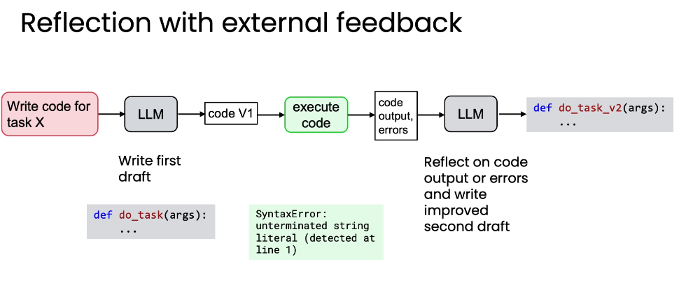

Reflection is simple to add because the workflow is explicit
The engineer decides that the application will draft, review, and rewrite. The model does not have to decide whether reflection should happen. The review can use the same model or a different model chosen for the checking step.

{kind=link}
The lesson begins with familiar edits to an email—clarifying dates, correcting a typo, and adding a signature—then applies the same draft-and-review structure to model outputs such as code.
External feedback can reveal what self-review cannot see
Reviewing text alone may miss a failure that appears only when the output is used. The course therefore extends reflection with evidence from execution, a checker, a search result, a word counter, or another tool.

{kind=link}
Self-review
Inspect the proposal
The model rereads the draft and looks for issues described in the review prompt.
External feedback
Inspect what happened
The workflow adds information that was not available in the draft alone.
The chart lab lets the reviewer see the rendered artifact
The first local notebook asks for a Q1 coffee-sales comparison between 2024 and 2025. A model writes matplotlib code, the workflow executes it, and a multimodal reviewer receives both the code and chart.
- V1Generate tagged Python. The prompt supplies the dataframe columns and execution constraints.
- RunCreate
chart_v1.png. Execution turns the proposal into a visible artifact. - SeeReview code and image together. The reviewer checks readability, clarity, completeness, labels, colors, and chart choice.
- V2Return structured feedback and revised code. The response is parsed, executed, and rendered as
chart_v2.png.
The SQL lab exposes a plausible query with the wrong meaning
The second local notebook asks which product color has the highest total sales. The event table records sales with negative qty_delta values because inventory leaves the store.
Looks reasonable
The query groups by color and multiplies quantity by price.
Total is negative
The result reveals that the inventory sign was interpreted as sales value.
Correct the sign
The revision uses ABS(qty_delta) or -qty_delta, then runs again.
A text-only reviewer can approve V1 because its syntax and structure look valid. Passing the result dataframe into the reflection step supplies the missing semantic evidence.
Reflection adds cost, so compare it with a baseline
The lessons evaluate “no reflection” and “with reflection” on the same tasks. For objective tasks such as SQL answers, a dataset can include a ground-truth answer for each prompt. For subjective artifacts such as charts, a structured rubric gives the judge concrete dimensions to score.
Objective dataset
Store prompts and known answers, then compute accuracy for both workflows.
Structured rubric
Score title, labels, chart choice, and axis range rather than asking only which image is better.
Avoid direct comparison
The lessons warn that a judge may favor the first option because of position bias.
Iterate with the metric
Change the generation or reflection prompt, rerun the eval, and keep changes that improve the result.
A useful reflection prompt names the action and criteria
“Make it better” leaves the reviewer without a target. The course recommends a clear review verb—such as check, validate, or critique—and explicit criteria tied to the task.
Vague
“Improve this.”
No quality dimension tells the model what to inspect.
Directed
“Validate the HTML structure.”
The action and criteria focus the second pass on a specific failure mode.
Because reflection takes another model call and can slow the workflow, the final decision should come from the application’s evaluation rather than an assumption that every extra pass helps.
Recall before you move on
Self-check
Why can text-only SQL reflection miss the negative-sales error?
The query is syntactically valid and appears to follow the schema. Its executed negative total reveals the sign convention that the text review missed.
What does the rendered chart add to reflection?
It exposes the actual chart type, labels, colors, readability, and composition for the reviewer to inspect.
How should subjective chart improvement be evaluated?
Use a rubric with explicit dimensions and score each chart, rather than relying only on a direct A-versus-B preference.
Course evidence + image attribution
Original English summary based on the local Module 2 notebooks and the Datawhale China Module 2 reference lessons. The two selected lesson images are reproduced from pinned commit a93ab1d with source links in their captions. The repository contains an Apache-2.0 LICENSE while its README names CC BY-NC-SA 4.0; attribution is preserved and this site does not claim image ownership.